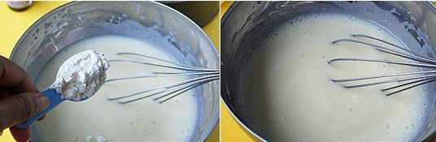

First let us see what are the ingredients needed for this muffin
Here are the list of ingredients :
- All purpose flour/ maida – 1 & 1/2 cup minus 3 tblsp
- Blueberries – 1 cup
- Corn flour – 3 tbslp
- Plain yogurt/ curd – 1 cup
- Oil – 1/2 cup
- Sugar – 3/4 cup
- Baking powder – 1 tsp
- Baking soda – 1/2 tsp
- Vanilla essence – 1 tsp
- Butter - 2tbsp
1.Preparing ingredients for our recipe
I am mixing the wet ingredients all together first in a big bowl.

2.Let's start cooking
As you see i have already added wet ingredients in a bowl.Now i am adding my dry ingredients.I mixed all my dry ingredients(All purpose flour,Corn flour,Baking powder and Baking powder) in a separate bowl.Now i started to add slowly one spoon at a time.Please don't add all at once it may create lump.
3.Adding Blue berries
I am adding blueberries into the flour mixer and give a gentle stir do not use whisk.use spatula and give gentle stir untill flour and bueberries are combined well.
4.Our Muffins are ready!!
Preheated over for 350 degree fahrenheit for 10 minutes.Then place the muffin pan in middle rack for 20-25 minutes.My oven took exactly 23 minutes.Now take the pan out and kept in on clooling rack untill its cool completely.Now our delicious muffins are ready.this is my little one's first cooking.To say exactly it was our family's cooking time and we enjoyed throughly.